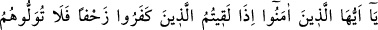
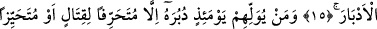
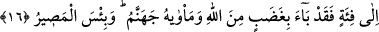
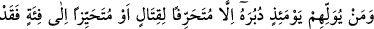
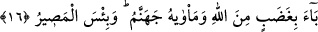
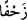
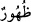
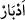

SAVAŞTAN KAÇMAMAK
15. Ey müminler! Toplu halde kâfirlerle karşılaştığınız zaman onlara arkanızı
dönmeyin (korkup kaçmayın).
16. Tekrar savaşmak için bir tarafa çekilme veya diğer bölüğe ulaşıp mevzi tutma
durumu dışında kim öyle bir günde onlara arka çevirirse muhakkak ki o, Allah’ın
gazabını hak etmiş olarak döner. Onun yeri de cehennemdir. Orası varılacak ne
kötü yerdir!
“Ey müminler! Toplu halde” onlar çok büyük bir kalabalık siz ise az olduğunuz halde
“kâfirlerle karşılaştığınız” onların size doğru kayarak geldiğini gördüğünüz “zaman
onlara arkanızı dönmeyin” kaçmak bir tarafa onlara arkanızı bile dönmeyin. Bırakın
sayıca onlara yakın veya onlarla aynı seviyede olmayı, daha az olduğunuz zaman bile
onların karşısına çıkın ve savaşın.
“”, akma/depreşme demektir. Bebeğin yavaş yavaş sürünmesi için de bu kelime
kullanılır. Burada düşmanına yönelmiş büyük bir ordu hakkında kullanılmıştır. Çünkü bu
ordu, çokluğu ve kalabalık oluşu sebebiyle son derece yavaş hareket eden toplu tek bir
cisim gibi görünür.
Âyette “” (arkalar) mânâsında olmak üzere kelimesi yerine “” kelimesinin
kullanılması, savaştan kaçan kimsenin yaptığı işi kötülemek ve düşman karşısında
bozguna uğramasının ne kadar alçakça bir davranış olduğunu vurgulamak içindir.
16. Tekrar savaşmak için bir tarafa çekilme veya diğer bölüğe ulaşıp mevzi tutma
durumu dışında kim öyle bir günde onlara arka çevirirse muhakkak ki o, Allah’ın
gazabını hak etmiş olarak döner. Onun yeri de cehennemdir. Orası varılacak ne
kötü yerdir!
“Tekrar savaşmak için bir tarafa çekilme” ya savaşmakta olduğu gruptan daha